“My 5-year-old was struggling with letter sounds and simple blending, but within just a few weeks he started reading storybooks on his own.”
Karn A. · Parent
SINCE 2000Vastrapur, opposite the lake
Confident readers. Fearless speakers.
UK-certified Jolly Phonics for little ones, spoken English and stage confidence for school kids, grammar for every board, and public speaking for adults. Small offline batches, personally mentored by Anita Goyal for over 25 years.
5.0★ · 290 Google reviews5,000+ learnersAges 3.5 to adults
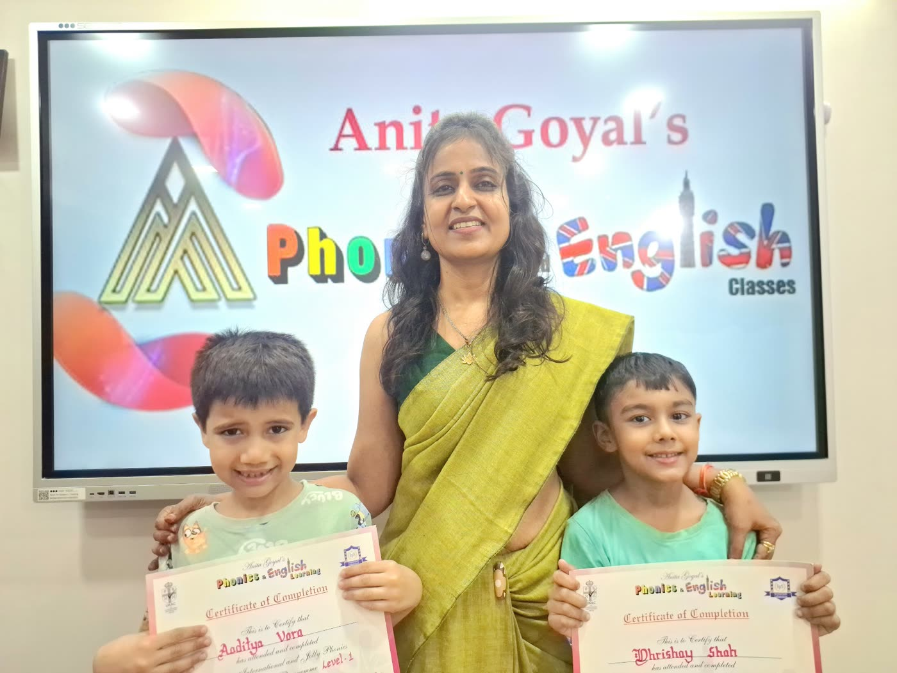
Certificate dayTwo more young readers, reading on their own
5.0
★★★★★
290 Google reviewsUKcertified phonics
25+years teaching in Ahmedabad
5,000+learners helped
5.0★from 290 Google reviews
42letter sounds, the Jolly Phonics way
Find the right program
How old is your learner?
Every program runs in small offline batches at the Vastrapur centre. Pick an age to see what they'll learn.
How phonics works
Sound it out. Read it yourself.
Children who memorise words by shape get stuck as books get harder. Synthetic phonics teaches how English words are built, so a child can read words they've never seen. Try it below.
Tap a word, then watch the sounds blend.
1
Learn the 42 sounds
Each sound with an action and the right way to write it.
2
Blend
Push sounds together to read new words.
3
Segment
Break words into sounds to spell them right.
4
Read on your own
Tricky words and fluency until storybooks feel easy.
Why families choose us
Small batches. Big confidence.
Parents from across Ahmedabad West have trusted the classes for a quarter of a century.
🎤
Mic & stage every day
Daily speaking practice on the mic and stage is how shyness goes away.
👩🏫
Personal attention
Limited seats per batch, so every child gets feedback and speaking time.
📖
Free level assessment
Find your child's current reading level before choosing a batch.
🎬
Learning beyond books
Movie time, potluck parties and certificate days keep children excited to come back.
VastrapurBodakdevSatelliteThaltejGurukulDrive-In Road
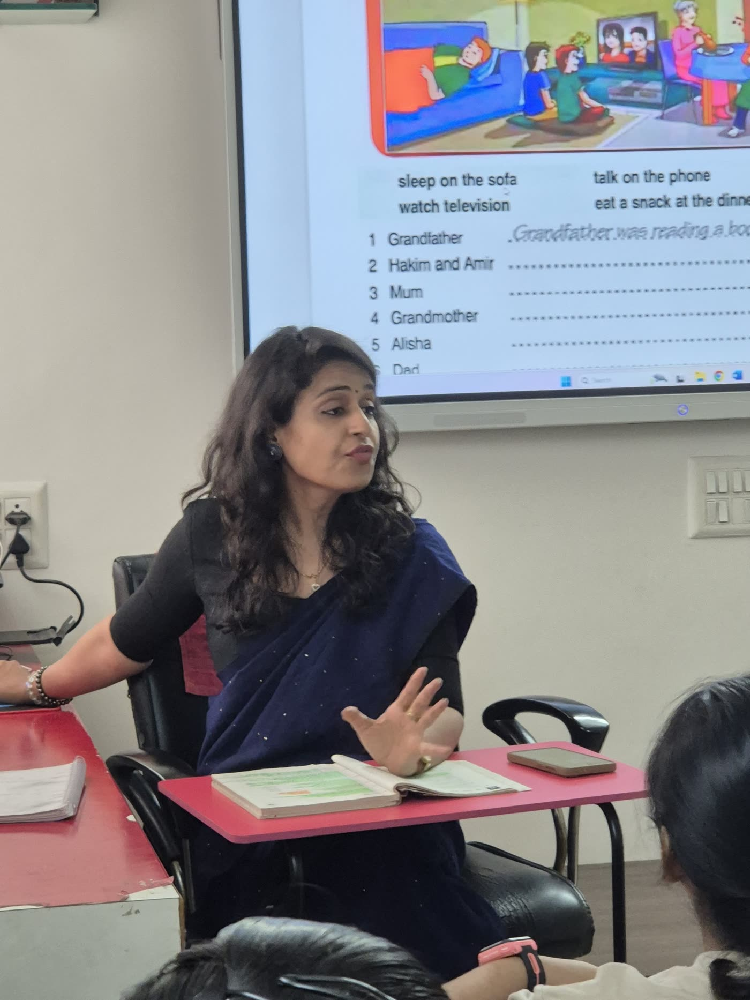
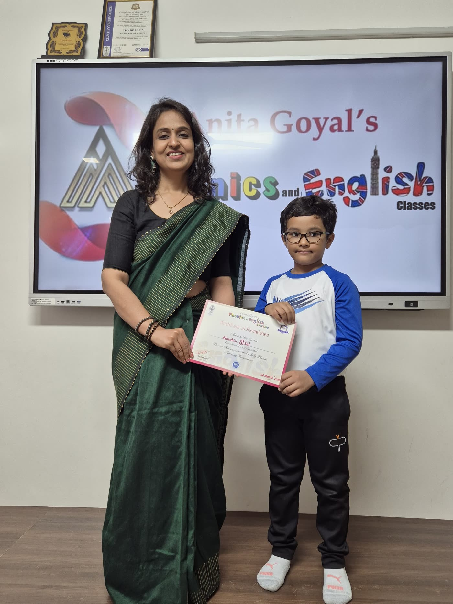
Meet the founder
Anita Goyal, UK-certified phonics expert
Anita Ma'am started her classes in Vastrapur in 2000 and has since helped more than 5,000 children and adults read and speak English with confidence.
She teaches with Amit Sir. Parents often mention the same things: patience, warmth, and a classroom where even the quietest child starts speaking up.
2000Teaching since
5,000+Learners
290Google reviews
Offer on Google · till 23 Nov
Ask about the offer
Flat ₹2,000 off the combined course.
One all-in-one program that brings every skill together for complete fluency.
- Public speaking
- English speaking
- Phonics
- Grammar & vocabulary
Real results
Parents noticed the difference.
Straight from Google reviews by parents and students.
“My 6-year-old was struggling with spellings and blends. After joining Anita Ma'am's batch, his reading speed and pronunciation improved tremendously.”
Shivam M. · Parent“My daughter used to be very quiet. The everyday mic practice and stage activities gave her real confidence to speak clearly without hesitation.”
Shital G. · ParentWatch a real class
Don't take our word. See it.
Straight from the classroom in Vastrapur: lessons, student speeches and parents in their own words. Tap a video with the sound badge to listen.
Inside the classroom
More on InstagramProud moments.
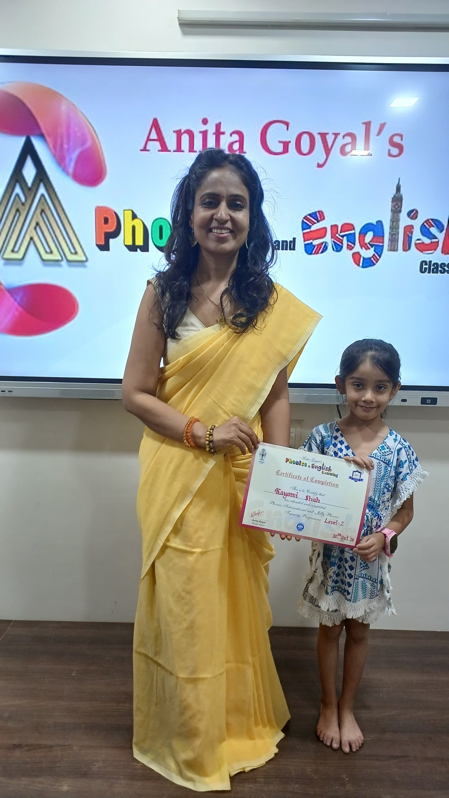
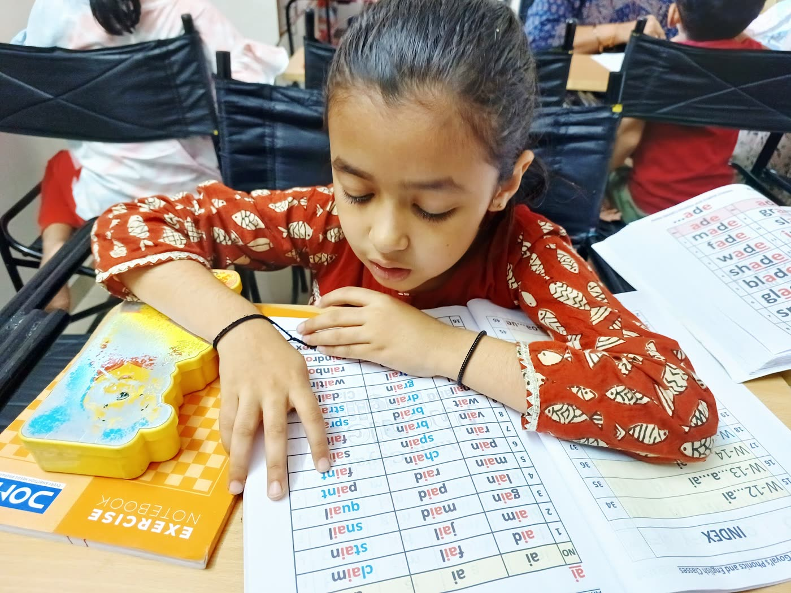
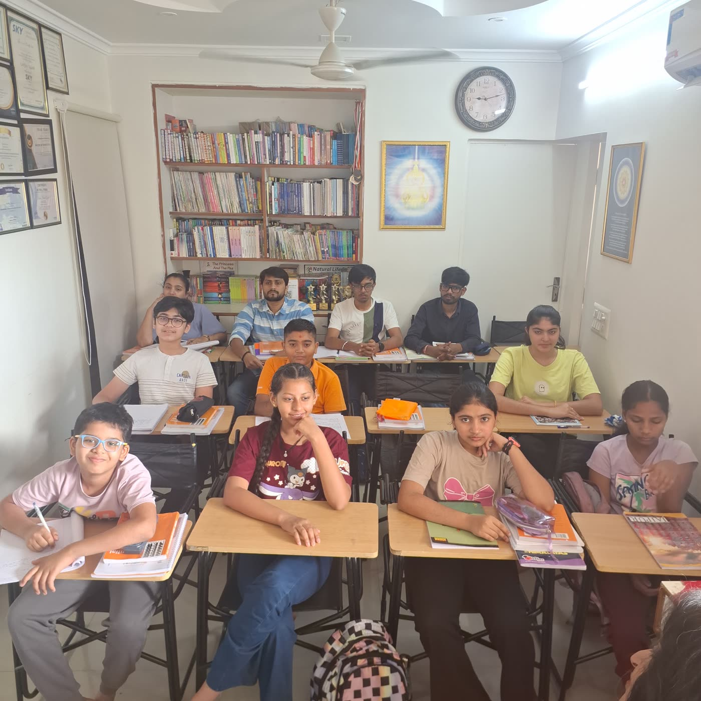
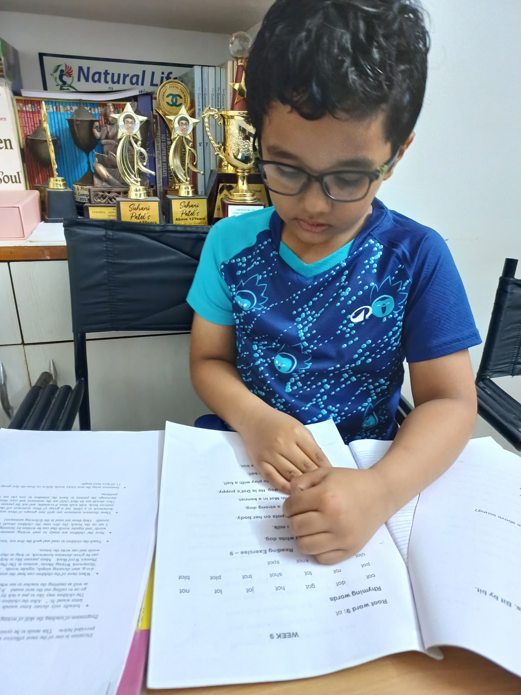
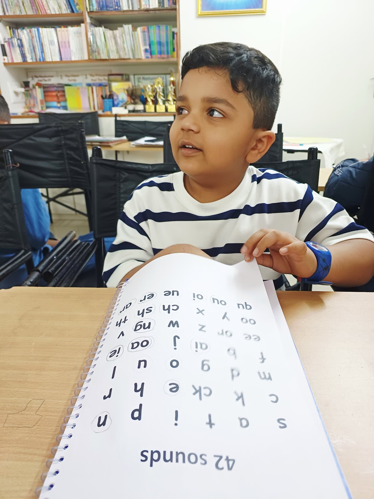
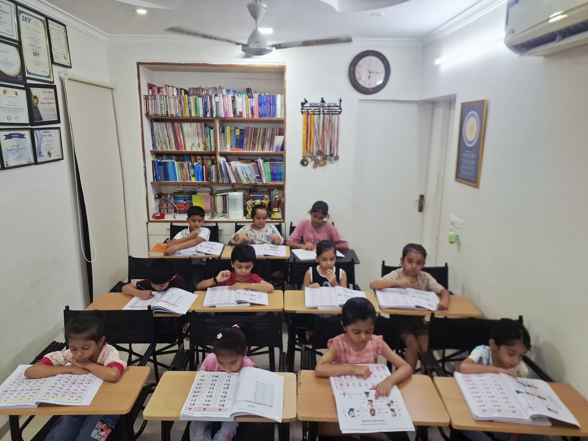
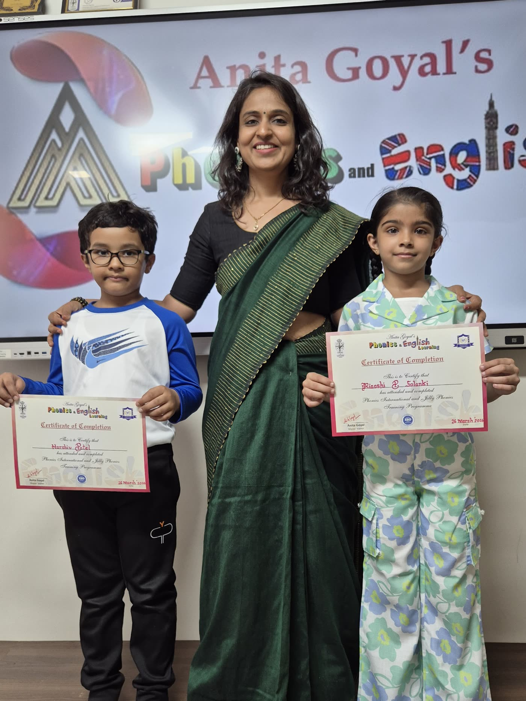
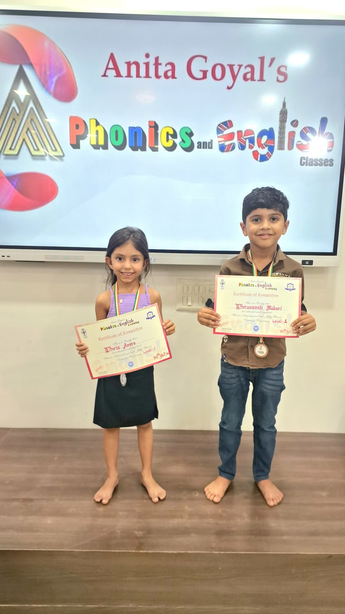
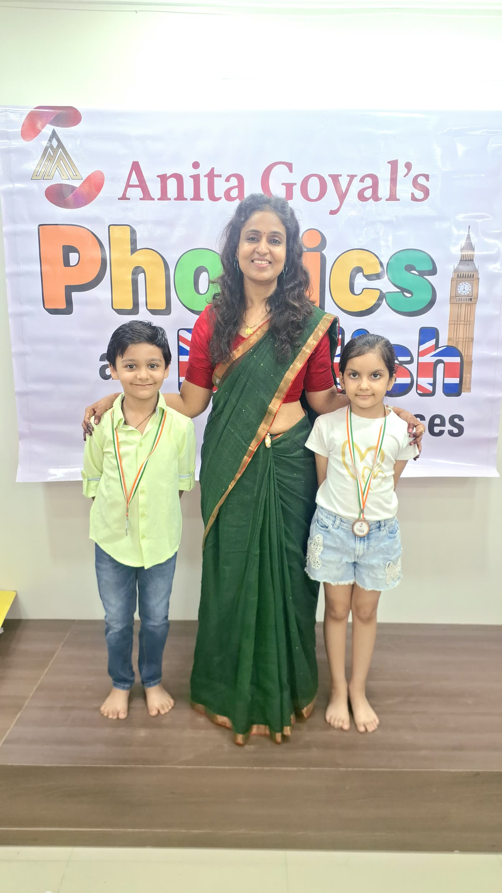
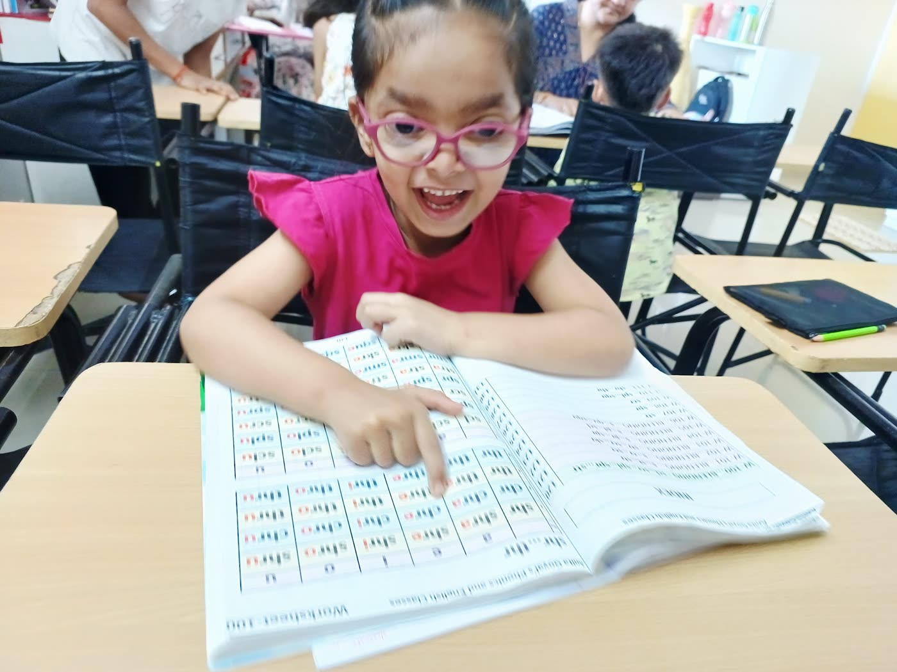
5.0
★★★★★
290 Google reviews · 4.9 on Justdial · 100% recommend on Facebook★★★★★“The supportive environment encourages students to speak on stage without fear. Thank you, Anita Ma'am and Amit Sir, for your dedication, guidance and constant encouragement.”
Kapil T. · Parent
★★★★★“She has developed a genuine interest in reading and now actively tries to read books, labels, signboards and words she comes across in daily life.”
Sweta S. · Parent
★★★★★“Her teaching methods are practical, interactive and easy to understand. She helps students build confidence in speaking before an audience.”
Tilak V. · Spoken English student
★★★★★“The daily stage time, group discussions and friendly guidance made a massive difference in my communication. I can speak without fear now.”
Mahesh J. · Adult student
★★★★★“The regular stage practice and interactive activities completely removed their shyness. They now read fluently and speak up with so much confidence.”
Purvi A. · Parent
★★★★★“Very warm atmosphere and individual attention for every child. It's amazing to see my kid improve a lot.”
Shivam M. · Parent
Batches
Pick a time that works.
Kids
Evenings & weekends
Phonics, spoken English and grammar batches after school and on weekends.
Adults
Mornings
7:30–9 AM and 9–10:30 AM for students, graduates, professionals and homemakers.
Admissions
New batches open
Seats are limited per batch. WhatsApp to check timings and reserve a seat.
FAQ
Questions parents ask
From what age can my child join?
Phonics starts from age 3.5. Spoken English and stage confidence batches are for ages 7 to 14, and grammar covers Grades 1 to 10.
Is there a free assessment?
Yes. Book a free reading-level assessment at the Vastrapur centre so we can suggest the right batch.
Which school boards do you cover?
CBSE, ICSE and GSEB English grammar and writing.
Are classes online or offline?
Offline, at Chinmay Crystal Tower opposite Vastrapur Lake, close to Bodakdev, Satellite, Thaltej and Gurukul.
Do you teach adults?
Yes. Morning batches of spoken English and public speaking are open to students, graduates, professionals and homemakers.
How soon will we see progress?
Every child learns at their own pace. Many parents in our reviews noticed a clear change in reading and confidence within a few weeks.
Visit the centre
Opposite Vastrapur Lake.
- Address
- A/301, Chinmay Crystal Tower, opp. Vastrapur Lake Road, Vastrapur, Ahmedabad 380054
- Phone / WhatsApp
- +91 91691 66130
- anitagoyal2021@gmail.com
- Hours
- Calls and WhatsApp until 11 PM